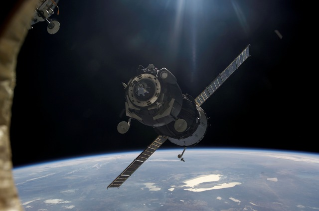
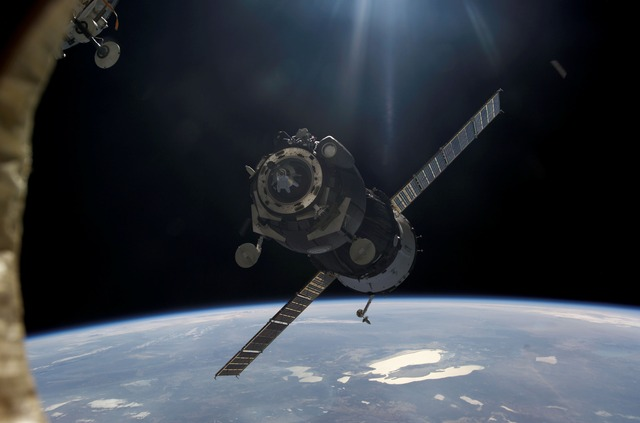

Life in space
Number of people in space right now:
People have been living in space on board the International Space Station for almost 19 years.
The first crew, Expedition One, arrived on 2 November 2000 and someone has been on board ever since.
Learn more about the astronauts life in space.
Work
The main purpose of the International Space Station is to provide an international laboratory for experiments within the space environment.
The ISS serves as a microgravity and space environment research laboratory in which crew members conduct experiments in biology, human biology, physics, astronomy, meteorology, and other fields
The crew also has to make sure that the station is in top shape, so they clean, check equipment, maintain and repair or replace broken equipment.
Spacewalks
Trips outside the station are called "spacewalks," and they take a lot of preparation and safety training.
astronauts do spacewalk to work outside the station in their space suits.
It’s a tough and dangerous job but the view is terrific.
One wrong move and an astronaut could just float off into the vacuum of space. They also have to watch for leaks in the spacesuits that protect them from the bitterly cold temperatures and radiation in space.
Training
Crew members must exercise two hours each day to stay fit and keep their bones and muscles strong.
They have mandatory workouts so they don't lose too much muscle mass in the weightless environment. (Since they don't have to fight gravity, they get a lot less exercise while moving around.)
You can easily lift hundreds of pounds in a weightless environment, so astronauts have a cleverly designed machine for weight lifting.

Food
Since we don’t have a freezer, refrigerator, stove or microwave, most of the food has already been cooked, then freeze dried and vacuum packed, or it is thermally stabilized (meaning treated and sealed in a package to prevent spoiling), much like camping food.
Packages of freeze dried food can be reconstituted by adding water and then warmed up in a small warming oven.
If objects escape inside the ISS, they can float away, get lodged in equipment, and cause malfunctions.
Sleep
The middle section of the station is where most of the crew sleeps.
Each astronaut has their own tiny room that includes a work space and a sleeping bag strapped to the wall.
Sleeping in space is hard to get used to since you don't feel the sensation of lying down. Astronauts zip themselves into a sleeping bag every night so they don't float around in their sleep.
And they have to keep careful track of their sleep schedule since days don't pass the same on the ISS as they do on Earth. The station is whizzing around the planet so quickly that the crew sees about 16 sunrises and sunsets during a 24-hour Earth day.
Private business
The space potty is a little different than the Earth potty. First of all, to keep from floating away, you must use foot-loops or straps while ‘sitting’ on the seat. This holds you on to the seat, sort of like a seat belt. Secondly, the space potty uses suction, not water, to ‘flush.’
Small tasks like clipping your nails become a problem. Astronauts clip them near a vent, so that tiny pieces of nail don't end up floating all over the station.
To was or shower astronauts squirt a few lines of water on their skin and hair and then use no-rinse soap and shampoo to clean themselves.
More pictures from the ISS


 
